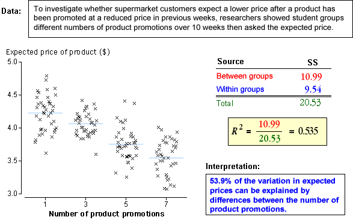

Sums of squares
The table below summarises the interpretation of the total, within-treatment
and between-treatment sums of squares.
| Sum of squares |
Interpretation |

| Overall variability of Y, taking no account of the factor. |

| Describes variability around the treatment means and is therefore variability
that cannot be explained by the model. |

| Describes how far the treatment means are from the overall mean — i.e.
the variability of the treatment. It can also be interpreted as the
sum of squares explained by the model. |
Coefficient of determination
Since the between-treatment (explained) and within-treatment (residual) sums of squares
add to the total sum of squares, a useful summary statistics is the proportion
of the total sum of squares that is explained by the model. This proportion is
called the coefficient of determination and is denoted by R2.

Note the following properties of R2.
- R2 always has a value between zero and one.
0 ≤ R2 ≤ 1
- When R2 is close to 1, all values must be relatively close
to their level means. Since the proportion of unexplained
variation is (1 - R2), the unexplained variation must
be relatively low.
- When R2 is close to 0, the variability within the factor levels is
much greater than the variability between the means — the level means are similar
to each other.
Examples
The diagram below shows how R2 is calculated and interpreted for
a few data sets.
